LEnglish – Học từ vựng,
luyện viết với phản hồi từ AI
Ứng dụng mobile hỗ trợ học tiếng Anh thông minh
Nhóm 11 — 6SCNTT
Phần 1: Giới thiệu đề tài
Vấn Đề Thực Tiễn & Ý Tưởng Giải Quyết
Phân tích thực trạng trở ngại của người học tiếng Anh và định hình giải pháp công nghệ toàn diện.
🛑Rào Cản Thực Tiễn
Não bộ quên đến 70% từ mới sau 24 giờ; việc ôn tập thường ngẫu hứng, thụ động và thiếu lộ trình khoa học.
Viết câu/đoạn văn nhưng không biết mình sai ở đâu; chi phí và thời gian nhờ người sửa bài cao → sinh tâm lý ngại viết.
Dùng từ điển, sổ tay và app ghi chú phân mảnh; thiếu cơ chế nhắc nhở chủ động dẫn đến việc dễ bỏ cuộc giữa chừng.
💡Giải Pháp Của LEnglish
Tự động giãn cách ôn tập: 1, 2, 4, 7, 14, 30... ngày; gửi thông báo đúng “thời điểm vàng” để nhớ vĩnh viễn.
Chấm điểm tức thì (thang 0–10), sửa câu chuẩn ngữ pháp và giải thích chi tiết bằng tiếng Việt.
Ghim Widget ra Home Screen, bôi đen từ ngoài để lưu ngay, quét chữ OCR sách → học mọi lúc mọi nơi.
Tại Sao Là Mobile App? & LEnglish Là Gì?
Lý do lựa chọn nền tảng di động và định vị giá trị giải pháp hỗ trợ học tiếng Anh thông minh.
📱 Tại Sao Lựa Chọn Nền Tảng Mobile App?
- Luôn bên người dùng: Điện thoại là vật bất ly thân, dễ dàng tiếp cận mọi lúc mọi nơi.
- Học tập vi mô (Micro-learning): Tận dụng 5–10 phút rảnh rỗi trên xe bus, giờ giải lao để ôn tập.
- Thông báo nhắc học (Push Notification): Đánh thức thói quen học tập đúng chu kỳ sinh học.
- Tích hợp sâu OS: Tiện ích Widget màn hình chính, bôi đen từ ngoài và quét camera OCR.
💡 LEnglish Là Gì?
- Ứng dụng học tiếng Anh thông minh: Kết hợp quản lý sổ từ cá nhân và luyện viết câu văn.
- Ôn tập ngắt quãng (SRS): Tự động tính toán ngày ôn tập giãn cách để chống quên lãng.
- Chấm bài tự động với AI: Phát hiện lỗi sai ngữ pháp, cho điểm số và giải thích tiếng Việt.
Phần 2: Phân tích & Thiết kế
Biểu Đồ Quan Hệ Thực Thể (ERD)
Mô hình dữ liệu quan hệ hoàn chỉnh của hệ thống LEnglish (8 bảng, chuẩn hóa 1NF, khóa ngoại & ràng buộc toàn vẹn).
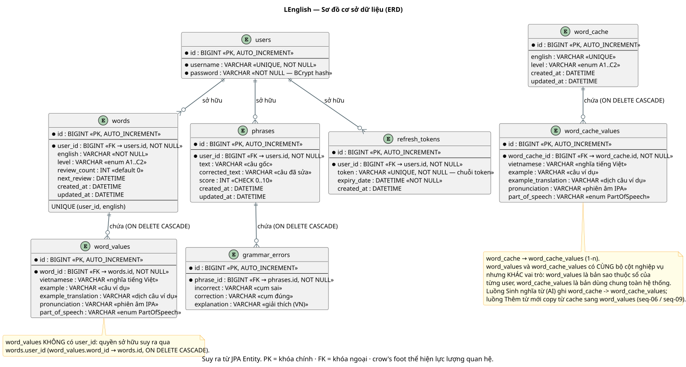
Nhấp chuột vào ảnh để xem chi tiết độ phân giải caoCấu Trúc 8 Bảng & Nguyên Lý Thiết Kế
Lưu tài khoản, mật khẩu băm BCrypt (60 ký tự). Bảng refresh_tokens lưu phiên làm việc, xóa khi hết hạn hoặc logout (Refresh Token Rotation).
Sổ từ của user: UNIQUE (user_id, english). Tách thuộc tính đa trị 1NF sang word_values (5 cột riêng: nghĩa, ví dụ, dịch, phiên âm IPA, từ loại). Cột SRS: review_count, next_review.
KHÔNG có cột user_id — kho từ điển chung toàn hệ thống. Sinh bởi AI (Cache-first); khi user khác tra/thêm cùng từ sẽ lấy trực tiếp từ cache, tiết kiệm chi phí gọi LLM.
Lưu câu gốc, câu đã sửa và điểm số score (CHECK 0..10) do AI chấm. Bảng con grammar_errors lưu chi tiết lỗi sai, cách sửa và giải thích tiếng Việt.
ON DELETE CASCADE trên tất cả các quan hệ 1-N cấu thành (Words → WordValues, Phrases → GrammarErrors, Users → Tokens/Words/Phrases), đảm bảo triệt tiêu dữ liệu rác.
Tổng Hợp Ma Trận Chức Năng Hệ Thống
Danh mục các chức năng người dùng, dịch vụ nền tảng AI, tác vụ hệ thống tự động và tích hợp hệ điều hành Android.
🔐 Quản Lý Tài Khoản & Phiên
5 tác vụ- ACT-01: Tạo tài khoản (Đăng ký)
- ACT-02: Đăng nhập hệ thống
- ACT-03: Đăng xuất tài khoản
- ACT-04: Làm mới token (Auto-Rotation)
- ACT-18: Dọn refresh token quá hạn
📚 Quản Lý Từ & Ôn Tập SRS
6 chức năng- ACT-05: Xem danh sách từ vựng
- ACT-06: Thêm từ vựng mới
- ACT-07: Sửa thông tin & nghĩa từ
- ACT-08: Xóa từ vựng khỏi sổ
- ACT-19: Xác nhận ôn tập & Tính SRS
- • Tab Ôn tập (Client-side filter)
✍️ Quản Lý Đoạn Văn & Chấm
3 chức năng- ACT-10: Xem danh sách đoạn văn
- ACT-11: Thêm đoạn văn (Gọi AI chấm)
- ACT-13: Xóa đoạn văn đã lưu
🤖 Trí Tuệ Nhân Tạo (AI Engine)
3 tính năng- ACT-09: Sinh nghĩa từ (Cache-First)
- ACT-12: Chấm đoạn văn (Hàm nội bộ)
- ACT-20: Thêm 10 từ theo chủ đề
📱 Nền Tảng Thiết Bị Android
4 tính năng OSWorkManager kiểm tra dueCount ngầm • Push Notification khi có từ đến hạn.
AppWidgetProvider cập nhật từ cần ôn • 1-click mở app học ngay.
Intent ACTION_PROCESS_TEXT khi đọc báo/app khác • Bật form thêm tức thì.
Google ML Kit Text Recognition chạy on-device • Điền văn bản vào ô Chấm bài.
Tạo Tài Khoản (Đăng Ký)
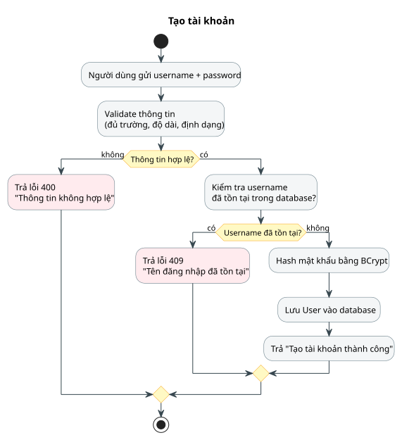
🎯 Mục tiêu & Điểm đầu cuối API
Khởi tạo tài khoản mới vào hệ thống. Endpoint: POST /api/auth/register (Body: username, password).
🔄 Chi Tiết Luồng Hoạt Động (Step-by-Step)
- Gửi thông tin: Người dùng nhập tên đăng nhập và mật khẩu tại form giao diện.
- Validation đầu vào: Hệ thống kiểm tra hợp lệ (không rỗng, độ dài tối thiểu, ký tự hợp lệ). Nếu sai → trả ngay 400 Bad Request ("Thông tin không hợp lệ").
- Kiểm tra trùng lặp: Truy vấn bảng
userstheousername. Nếu tên đăng nhập đã tồn tại → trả 409 Conflict ("Tên đăng nhập đã tồn tại"). Bước này chặn trước ngoại lệ vi phạm Unique constraint của CSDL. - Mã hóa mật khẩu: Sử dụng thuật toán BCrypt sinh chuỗi băm 60 ký tự bảo mật (với Salt ngẫu nhiên). Tuyệt đối không lưu mật khẩu thô.
- Lưu CSDL & Phản hồi: Thêm bản ghi vào bảng
usersvà trả về kết quả 200/201 Thành công.
Đăng Nhập (Authentication)
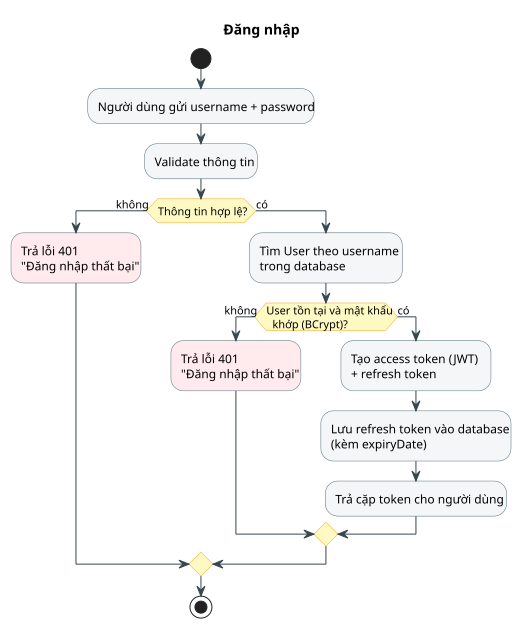
🎯 Mục tiêu & Cấp phát Token
Xác thực danh tính người dùng và cấp phát cặp Access Token (JWT ngắn hạn) + Refresh Token (UUID dài hạn). Endpoint: POST /api/auth/login.
🔄 Chi Tiết Luồng Hoạt Động
- Nhận thông tin & Validate: Tiếp nhận username và password. Nếu định dạng sai → trả 401 Unauthorized.
- Tra cứu CSDL: Tìm bản ghi User trong bảng
userstheo tên đăng nhập. - So khớp mật khẩu: Kiểm tra mật khẩu gửi lên với mã băm trong DB thông qua
passwordEncoder.matches(). Nếu không tìm thấy User hoặc mật khẩu không khớp → đồng loạt trả 401 Unauthorized ("Đăng nhập thất bại") để chống rò rỉ thông tin tài khoản. - Sinh Token kép:
AccessToken: Chuỗi JWT có thời hạn ngắn (15-60 phút), chứa user claims và chữ ký số.RefreshToken: Chuỗi ngẫu nhiên dài hạn kèm thời điểm hết hạnexpiry_date.
- Lưu DB & Phản hồi: Lưu refresh token vào bảng
refresh_tokens, trả cặp token về cho Client lưu vào bộ nhớ an toàn (EncryptedSharedPreferences).
Đăng Xuất (Logout & Token Revocation)
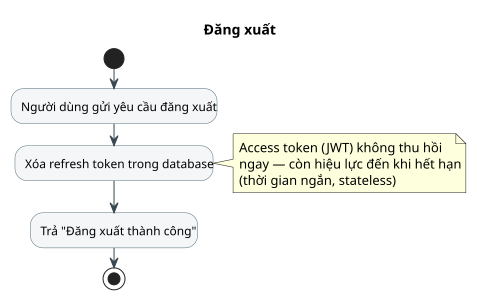
🎯 Hủy phiên làm việc & Thu hồi Token
Hủy bỏ Refresh Token trong CSDL để ngăn Client tự động làm mới phiên làm việc. Endpoint: POST /api/auth/logout.
🔄 Chi Tiết Luồng Hoạt Động
- Gửi yêu cầu đăng xuất: Client gửi request kèm refresh token và Bearer access token lên server.
- Thu hồi trong CSDL: Server tìm và xóa bản ghi trong bảng
refresh_tokenstương ứng với token gửi lên. - Xóa cục bộ phía Client: Client dọn sạch bộ nhớ cache, access token và refresh token khỏi thiết bị.
- Phản hồi thành công: Server trả về mã 200 OK ("Đăng xuất thành công").
Làm Mới Token (Refresh Token Rotation)
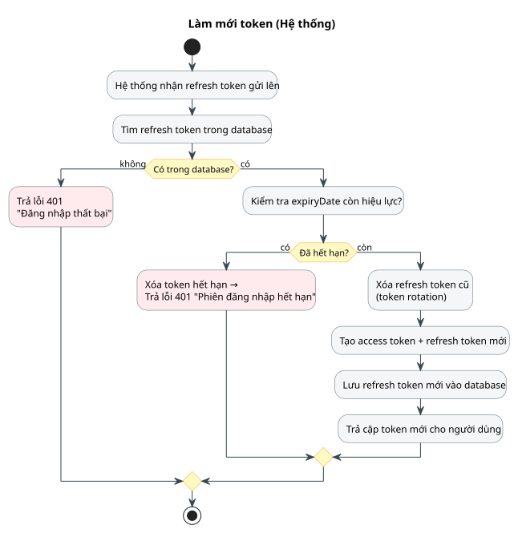
🎯 Tiêu Chuẩn Bảo Mật Refresh Token Rotation
Cơ chế tự động cấp cặp token mới khi Access Token hết hạn, đồng thời hủy ngay token cũ để chống tái sử dụng trái phép (Replay Attack). Endpoint: POST /api/auth/refresh.
🔄 Chi Tiết Luồng Hoạt Động
- Kích hoạt tự động: Khi một API nghiệp vụ trả về 401 do Access Token hết hạn, HTTP Interceptor phía client tự động gửi
refreshTokenlên server. - Tra cứu CSDL: Server tìm kiếm chuỗi token trong bảng
refresh_tokens. Nếu không có → trả 401 Unauthorized (buộc đăng nhập lại). - Kiểm tra hạn sử dụng: Nếu
expiry_date < now()→ Xóa token chết khỏi CSDL và trả 401 Phiên hết hạn. - Xoay vòng Token (Rotation): Nếu còn hạn:
- Xóa bản ghi
refreshTokencũ trong DB (dùng một lần). - Khởi tạo một cặp
accessTokenmới +refreshTokenmới. - Lưu
refreshTokenmới vào CSDL kèmexpiry_datemới.
- Xóa bản ghi
- Hoàn tất: Trả cặp token mới cho Client tiếp tục thực hiện request dở dang một cách trong suốt.
Xem Danh Sách Từ Vựng
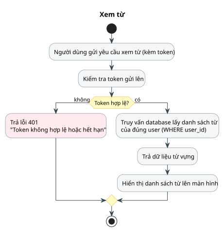
🎯 Truy Vấn Cô Lập Theo Người Dùng
Lấy toàn bộ danh sách từ vựng cá nhân cùng tất cả các nghĩa cấu thành. Endpoint: GET /api/words (Header: Authorization: Bearer <JWT>).
🔄 Chi Tiết Luồng Hoạt Động
- Gửi yêu cầu có xác thực: Người dùng mở màn hình Sổ từ vựng. Client gửi HTTP GET kèm JWT.
- JwtFilter kiểm tra: Bộ lọc xác thực tính hợp lệ và thời hạn JWT. Nếu lỗi/hết hạn → trả 401 Unauthorized.
- Trích xuất User ID & Query CSDL: Lấy
userIdtừ claims của token. Thực hiện câu lệnh truy vấn lọc nghiêm ngặtWHERE user_id = :userId. - Nạp cấu trúc 1-N: Tự động nạp danh sách
word_valuestương ứng của từng từ (nghĩa, ví dụ, phiên âm, từ loại). - Hiển thị giao diện: Trả mã 200 OK cùng danh sách DTO để app hiển thị dạng danh sách / Flashcard.
nextReview ≤ now() để hiển thị các từ đến hạn ôn tập SRS.
Thêm Từ Vựng Mới (Multi-Values 1-N)
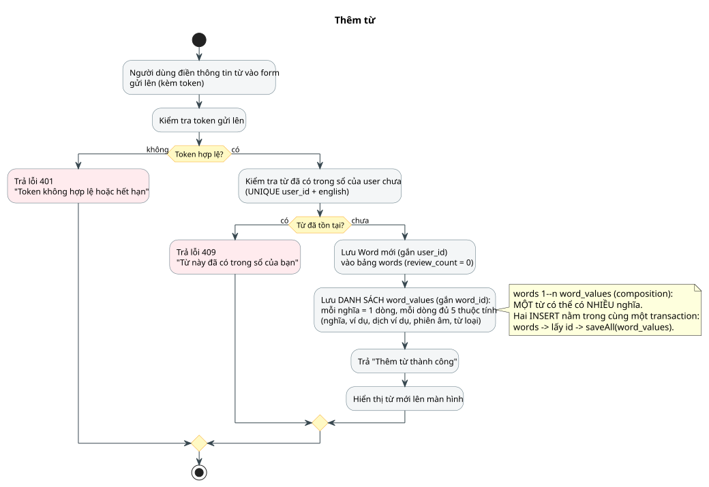
🎯 Lưu Trữ Đa Nghĩa Trong Một Transaction
Tạo từ mới gắn với tài khoản cá nhân kèm danh sách nghĩa đa trị. Endpoint: POST /api/words.
🔄 Chi Tiết Luồng Hoạt Động
- Nhập liệu & Gửi request: Người dùng nhập từ tiếng Anh, level và thêm một hoặc nhiều nghĩa tiếng Việt kèm ví dụ, phiên âm, từ loại.
- Kiểm tra JWT:
JwtFilterthẩm định token; trả 401 nếu không hợp lệ. - Kiểm tra trùng từ trong sổ: Kiểm tra ràng buộc
UNIQUE (user_id, english). Nếu từ đã có trong sổ của người này → trả ngay 409 Conflict ("Từ này đã có trong sổ của bạn"). - Transaction CSDL (Atomic):
- Insert bảng
words(gắnuser_id,review_count = 0,next_review = now()). - Nhận
word_idvừa sinh → Insert hàng loạt vào bảngword_values(mỗi nghĩa = 1 dòng đầy đủ 5 cột).
- Insert bảng
- Phản hồi: Trả mã 201 Created; giao diện cập nhật từ mới vào danh sách.
Sửa Từ Vựng (IDOR Guard & Orphan Removal)
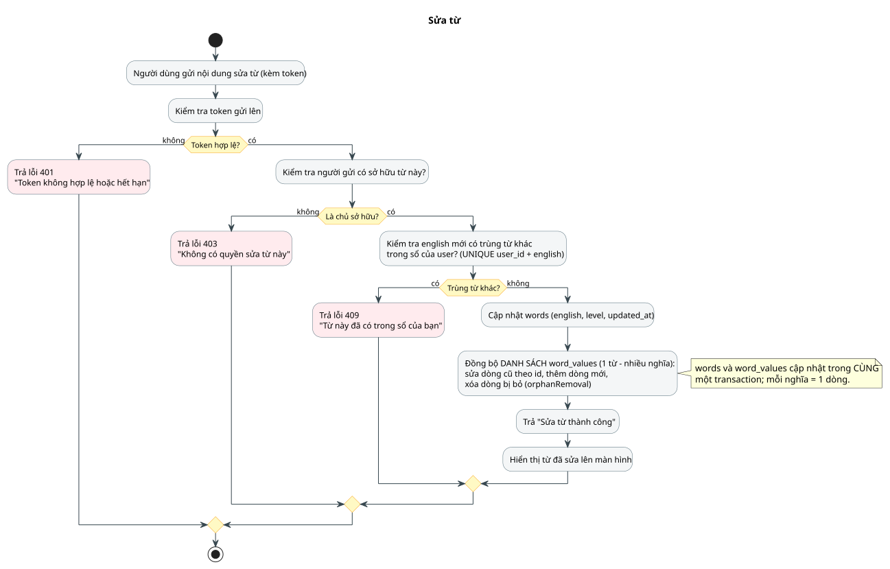
🎯 Bảo Mật Sở Hữu & Đồng Bộ Danh Sách Nghĩa
Cập nhật thông tin từ vựng có cơ chế chống sửa trộm dữ liệu người khác (IDOR). Endpoint: PUT /api/words/{id}.
🔄 Chi Tiết Luồng Hoạt Động
- Gửi yêu cầu chỉnh sửa: Client gửi thông tin cập nhật kèm
word_idvà JWT token. - Xác thực & Kiểm tra sở hữu (IDOR Guard): Thẩm định JWT (401 nếu sai). Kiểm tra xem
word.user_id == current_user.id? Nếu người dùng cố tình sửa từ của tài khoản khác → trả 403 Forbidden ("Không có quyền sửa từ này"). - Kiểm tra trùng lặp từ: Nếu có thay đổi chuỗi
english, kiểm tra xem từ mới có trùng với một từ khác trong sổ không. Nếu trùng → trả 409 Conflict. - Đồng bộ danh sách
word_values: Cập nhật dòng cũ theo ID, thêm dòng mới phát sinh, và tự động xóa dòng bị lược bỏ khỏi danh sách nhờ cơ chếorphanRemoval = truetrong JPA. - Phản hồi: Trả mã 200 OK cập nhật thành công.
Xóa Từ Vựng (Cascade Deletion)
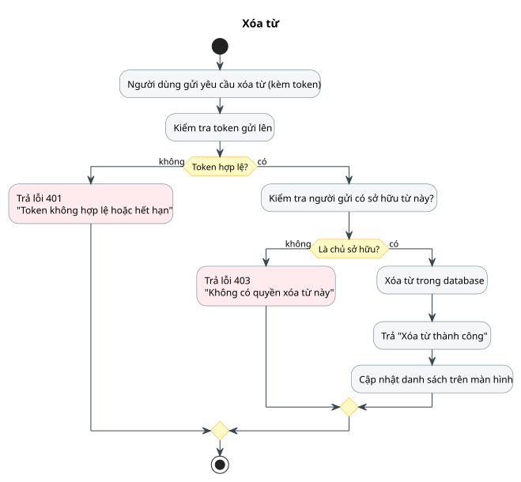
🎯 Xóa Từ & Tự Động Dọn Toàn Bộ Nghĩa Liên Quan
Xóa bản ghi từ vựng và tự động xóa lan truyền danh sách nghĩa con. Endpoint: DELETE /api/words/{id}.
🔄 Chi Tiết Luồng Hoạt Động
- Người dùng gửi lệnh xóa: Bấm nút Xóa từ trên giao diện và xác nhận cảnh báo.
- Xác thực danh tính:
JwtFilterkiểm tra token; trả 401 nếu lỗi. - Kiểm tra quyền sở hữu (403): Truy vấn bản ghi từ, so khớp xem
word.user_id == current_user.id? Nếu không phải chính chủ → trả 403 Forbidden ("Không có quyền xóa từ này"). - Thực thi xóa Cascade: Xóa bản ghi trong bảng
words. Ràng buộcON DELETE CASCADEtrong CSDL sẽ tự động xóa sạch toàn bộ các hàng tương ứng trong bảngword_values. - Phản hồi: Trả mã 200 OK / 204 No Content; UI cập nhật loại bỏ từ khỏi danh sách.
Sinh Nghĩa Từ (Chiến Lược Cache-First AI)
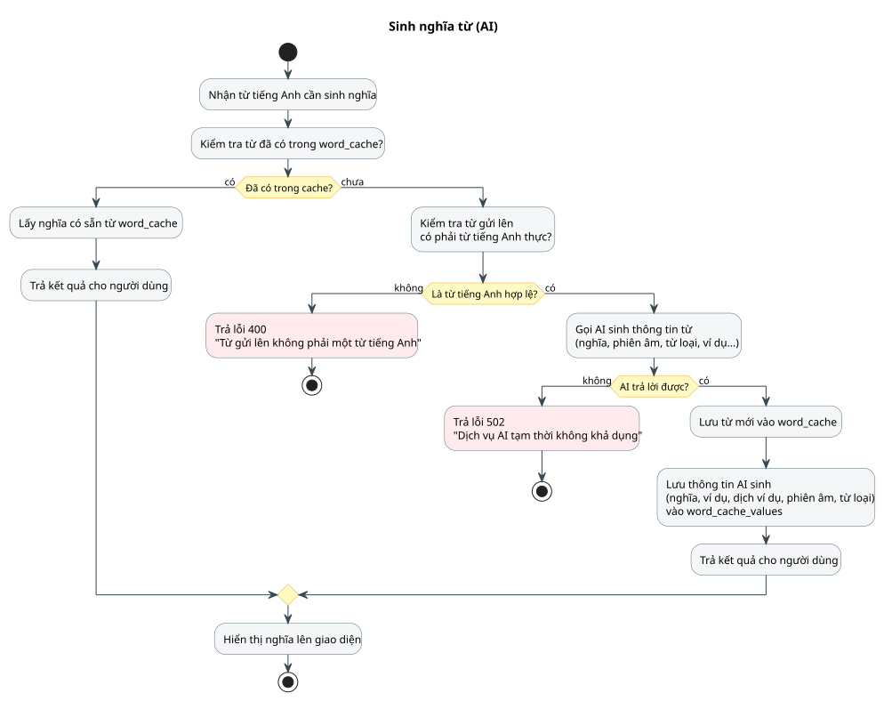
🎯 Kiến Trúc Bộ Nhớ Đệm Hai Tầng (Cache-First)
Tự động đề xuất nghĩa, phiên âm, từ loại và ví dụ câu khi người dùng gõ từ tiếng Anh. Sử dụng quan hệ «extend» với màn hình Thêm từ.
🔄 Chi Tiết Luồng Hoạt Động
- Kiểm tra Cache Hệ Thống: Nhận từ tiếng Anh → Truy vấn bảng
word_cache.- Cache-Hit: Nếu từ đã có trong cache → Lấy ngay danh sách nghĩa từ
word_cache_valuestrả về tức thì cho client (độ trễ ~10ms, tiết kiệm 100% quota AI). - Cache-Miss: Chưa có trong cache → Tiến hành luồng gọi AI bên dưới.
- Cache-Hit: Nếu từ đã có trong cache → Lấy ngay danh sách nghĩa từ
- Validation từ tiếng Anh: Kiểm tra xem chuỗi có phải từ tiếng Anh hợp lệ không. Nếu chuỗi vô nghĩa → trả 400 Bad Request ("Từ gửi lên không phải một từ tiếng Anh").
- Gọi AI: Gửi request sang LLM yêu cầu cấu trúc JSON chuẩn (nghĩa tiếng Việt, phiên âm IPA, từ loại, câu ví dụ, dịch câu ví dụ, level CEFR).
- Xử lý ngoại lệ: Nếu dịch vụ AI lỗi/timeout → trả 502 Bad Gateway ("Dịch vụ AI tạm thời không khả dụng").
- Lưu Cache & Phản hồi: Lưu từ vào
word_cachevà các chi tiết vàoword_cache_valuesđể tái sử dụng toàn hệ thống, sau đó trả dữ liệu cho người dùng.
Xem Danh Sách Đoạn Văn
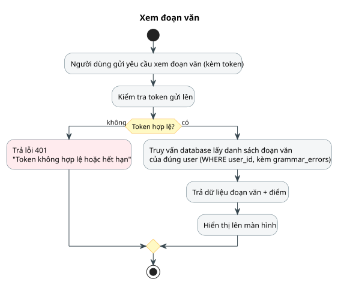
🎯 Lịch Sử Chấm Đoạn Văn Cá Nhân
Hiển thị các câu văn đã gửi chấm kèm điểm số và phân tích ngữ pháp chi tiết. Endpoint: GET /api/phrases.
🔄 Chi Tiết Luồng Hoạt Động
- Người dùng gửi yêu cầu: Mở màn hình Lịch sử đoạn văn kèm Bearer token.
- JwtFilter kiểm tra: Xác thực tính hợp lệ của token (401 nếu lỗi/hết hạn).
- Truy vấn CSDL: Thực hiện câu lệnh truy vấn lọc theo chính chủ
WHERE user_id = :userIdtrong bảngphrases. - Nạp lỗi ngữ pháp kèm theo: Tải toàn bộ danh sách
grammar_errorscủa từng câu văn (chứa cụm từ sai, cụm từ đúng và giải thích tiếng Việt). - Hiển thị kết quả: Trả về mã 200 OK; ứng dụng hiển thị dạng thẻ điểm số trực quan.
Thêm Đoạn Văn (Gộp Chấm AI «include»)
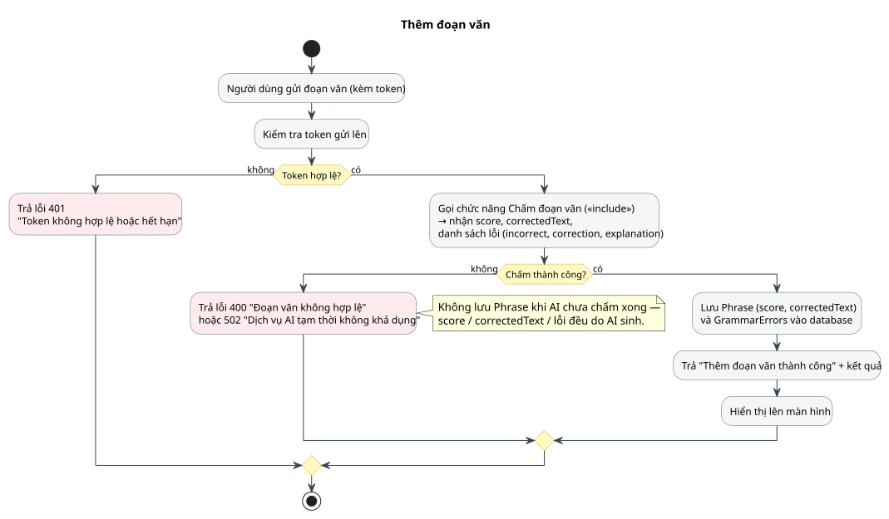
🎯 Quy Trình Chấm Trước — Lưu Sau
Người dùng gửi đoạn văn tiếng Anh → Hệ thống bắt buộc gọi AI chấm điểm trước, chỉ lưu vào CSDL khi AI chấm thành công. Endpoint: POST /api/phrases.
🔄 Chi Tiết Luồng Hoạt Động
- Gửi đoạn văn: Người dùng nhập đoạn văn (hoặc quét qua OCR) và bấm nút Chấm bài.
- Kiểm tra xác thực:
JwtFilterkiểm tra token (401 nếu lỗi). - Gọi hàm nội bộ Chấm đoạn văn («include» ACT-12): Chuyển văn bản sang dịch vụ AI để nhận về:
score (0..10),correctedText, và danh sách lỗi (incorrect, correction, explanation). - Xử lý khi AI thất bại: Nếu đoạn văn không hợp lệ → trả 400. Nếu AI quá tải → trả 502. Tuyệt đối không lưu bản ghi rác vào DB khi chấm chưa hoàn tất.
- Lưu CSDL & Phản hồi: Mở transaction lưu bảng
phrasesvà nạp danh sáchgrammar_errors. Trả kết quả 200/201 Thành công.
Chấm Đoạn Văn (Bộ Phân Tích 5 Chỉ Số Ngữ Pháp)
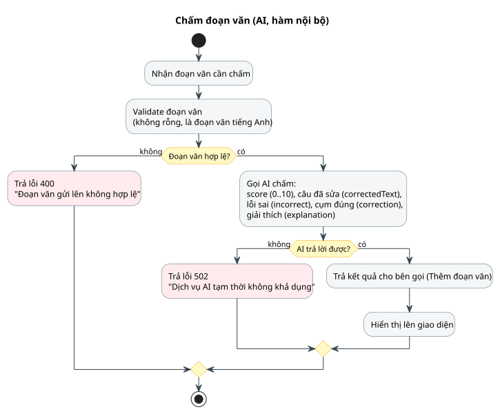
🎯 Hàm Nội Bộ Đánh Giá Chất Lượng Văn Bản
Không được gọi trực tiếp bởi người dùng. Được gọi bởi quy trình Thêm đoạn văn qua quan hệ phụ thuộc «include».
🔄 Chi Tiết Luồng Hoạt Động & Cấu Trúc Trả Về
- Kiểm tra đầu vào: Đoạn văn không được để trống, phải có độ dài hợp lý và là câu văn tiếng Anh. Nếu vi phạm → trả 400 Bad Request.
- Gọi AI Engine phân tích sâu: Gửi request sang AI API yêu cầu trả về đủ 5 thành phần kết quả:
1.
score: Điểm số (0..10)2.correctedText: Câu đã sửa3.incorrect: Cụm từ sai4.correction: Cụm từ đúng5.explanation: Giải thích cặn kẽ tiếng Việt - Xử lý lỗi mạng: Nếu AI timeout hoặc định dạng sai schema → trả 502 Bad Gateway.
- Trả về caller: Đóng gói dữ liệu DTO trả về cho hàm gọi
Thêm đoạn văn.
Xóa Đoạn Văn (Cascade Lỗi Ngữ Pháp)
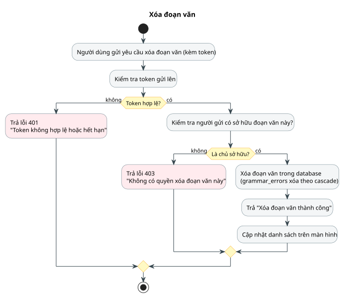
🎯 Xóa Đoạn Văn & Chống IDOR
Gỡ bỏ đoạn văn khỏi lịch sử học tập. Endpoint: DELETE /api/phrases/{id}.
🔄 Chi Tiết Luồng Hoạt Động
- Gửi yêu cầu xóa: Người dùng bấm Xóa câu văn trên danh sách.
- Kiểm tra JWT: Xác thực danh tính qua token (401 nếu lỗi).
- Kiểm tra quyền sở hữu (IDOR Check): Truy vấn bản ghi trong bảng
phrases. So sánhphrase.user_id == current_user.id. Nếu người dùng cố xóa câu của người khác → chặn ngay với mã 403 Forbidden. - Xóa CSDL & Cascade: Xóa bản ghi trong bảng
phrases. Do có cấu hìnhON DELETE CASCADE, tất cả bản ghi lỗi trong bảnggrammar_errorstự động bị xóa đồng thời. - Hoàn tất: Trả mã 200 OK; UI cập nhật biến mất đoạn văn.
Thông Báo Nhắc Nhở Ôn Tập (WorkManager)
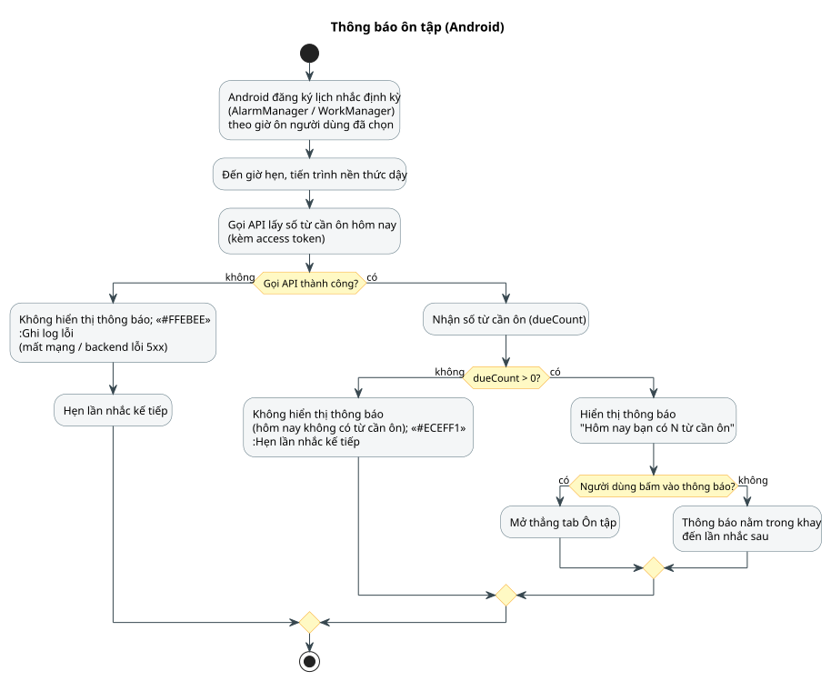
🎯 Tiến Trình Nền Thông Minh Theo Giờ Hẹn
Sử dụng WorkManager / AlarmManager thức dậy đúng khung giờ học viên đã cài đặt để nhắc nhở học tập kịp thời.
🔄 Chi Tiết Luồng Hoạt Động
- Kích hoạt theo lịch: Đúng giờ hẹn cài đặt, hệ điều hành Android đánh thức tiến trình nền (Background Worker).
- Gọi API kiểm tra số từ đến hạn: Worker gọi
GET /api/words/due-count(kèm JWT đã lưu an toàn). - Xử lý lỗi mạng: Nếu mất mạng hoặc backend lỗi 5xx → Worker im lặng ghi log và lên lịch hẹn lần tiếp theo (không tạo thông báo rác làm phiền).
- Rẽ nhánh số lượng từ:
- Nếu
dueCount == 0: Không hiện thông báo (hôm nay không có từ cần ôn), hẹn lần tiếp theo. - Nếu
dueCount > 0: Kích hoạtNotificationManagerhiển thị push: "Hôm nay bạn có N từ cần ôn tập!".
- Nếu
- Tương tác người dùng: Khi người dùng bấm vào thông báo, ứng dụng khởi chạy với Intent mở thẳng vào tab Ôn tập.
Widget Màn Hình Chính (AppWidgetProvider)
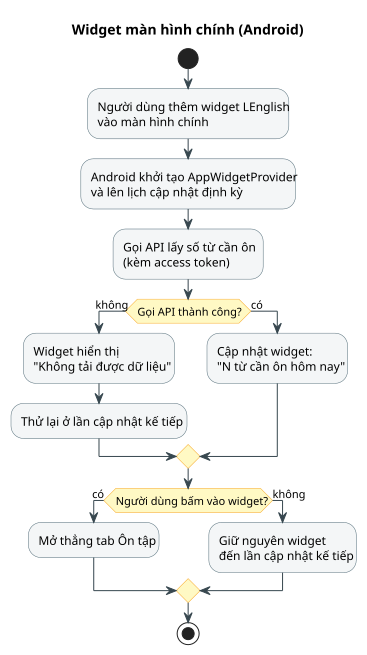
🎯 Tiện Ích Màn Hình Home — Học Tập Tiện Lợi
Theo dõi số lượng từ vựng cần ôn tập ngay trên màn hình chính của điện thoại mà không cần mở ứng dụng.
🔄 Chi Tiết Luồng Hoạt Động
- Thêm tiện ích: Người dùng thêm widget LEnglish vào màn hình chính Android.
- Khởi tạo AppWidgetProvider: Android kích hoạt hàm cập nhật và lên lịch làm mới định kỳ.
- Gọi API lấy số từ: Widget gửi request kèm access token lấy số từ cần ôn hôm nay.
- Cập nhật giao diện RemoteViews:
- Nếu gọi thành công: Widget hiển thị "N từ cần ôn hôm nay" kèm thanh tiến độ.
- Nếu thất bại (mất mạng): Hiển thị trạng thái nhẹ "Không tải được dữ liệu" và thử lại ở chu kỳ tiếp theo.
- 1-Click Action: Khi chạm vào widget, ứng dụng mở thẳng vào tab Ôn tập để người dùng bắt đầu học ngay.
Thêm Từ Từ Văn Bản Bôi Đen (ACTION_PROCESS_TEXT)
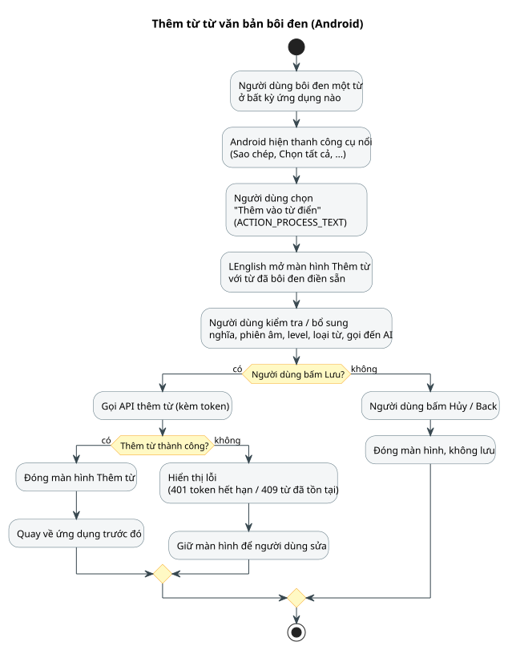
🎯 Tích Hợp Sâu Hệ Điều Hành (System Context Menu)
Tra và lưu từ vựng ngay khi đang đọc báo trên Chrome, đọc sách PDF hoặc ứng dụng khác mà không cần rời màn hình.
🔄 Chi Tiết Luồng Hoạt Động
- Bôi đen từ vựng: Người dùng bôi đen một từ tiếng Anh trên bất kỳ ứng dụng nào trong điện thoại.
- Menu hệ thống: Android mở thanh tác vụ nổi → Người dùng chọn mục "Thêm vào từ điển" (qua Intent
ACTION_PROCESS_TEXT). - Mở màn hình Thêm từ: LEnglish bật form Thêm từ với ô
englishđã điền sẵn từ vừa bôi đen. Hệ thống có thể gọi gợi ý nghĩa từ AI (Cache-first). - Lưu trữ & Quay lại: Người dùng kiểm tra nghĩa và bấm Lưu:
- Nếu thành công: Đóng cửa sổ và trở lại đúng vị trí ứng dụng trước đó đang đọc.
- Nếu lỗi (401 hết hạn / 409 từ đã có): Giữ màn hình và báo lỗi cụ thể để người dùng điều chỉnh.
Quét OCR Lấy Văn Bản Vào Ô Chấm Bài (ML Kit)
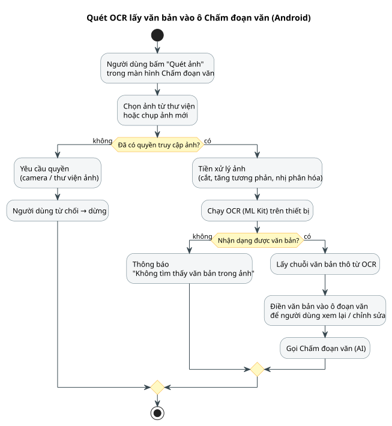
🎯 Nhận Diện Chữ On-Device — Không Tải Ảnh Lên Mạng
Sử dụng Google ML Kit Text Recognition chạy trực tiếp trên thiết bị, bảo mật dữ liệu tuyệt đối và tiết kiệm băng thông.
🔄 Chi Tiết Luồng Hoạt Động
- Chọn nguồn ảnh: Người dùng bấm nút "Quét ảnh" trong màn hình Chấm bài; chụp ảnh hoặc chọn từ thư viện.
- Kiểm tra quyền Android: Yêu cầu quyền Camera/Bộ nhớ nếu chưa được cấp.
- Tiền xử lý ảnh on-device: Cắt vùng chọn, tăng độ tương phản và nhị phân hóa ảnh để tối ưu chất lượng nhận diện.
- Chạy mô hình ML Kit: Thực thi OCR ngay trên CPU/NPU điện thoại:
- Nếu không tìm thấy chữ: Báo lỗi "Không tìm thấy văn bản trong ảnh".
- Nếu nhận diện thành công: Trích xuất chuỗi văn bản thô → Tự động điền vào ô nhập liệu để người dùng rà soát trước khi gửi chấm AI.
- Gửi chấm: Người dùng chỉnh sửa (nếu cần) và bấm nút Chấm bài để chuyển sang luồng ACT-11.
Dọn Refresh Token Hết Hạn (@Scheduled Server)
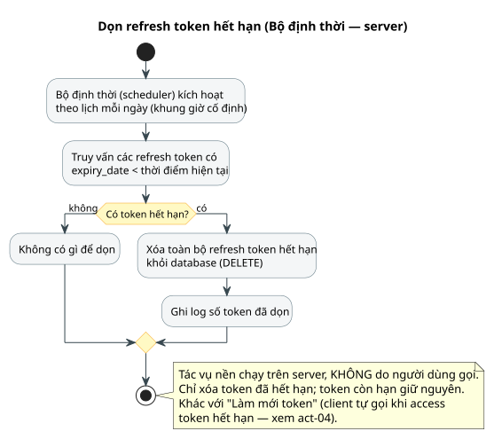
🎯 Tác Vụ Bảo Trì Tự Động Chạy Định Kỳ
Tiến trình nền chạy trên Server thông qua Cron Job của Spring Boot (@Scheduled). Hoàn toàn tự động, KHÔNG do người dùng gọi.
🔄 Chi Tiết Luồng Hoạt Động
- Kích hoạt theo cron: Đến khung giờ cố định ban đêm mỗi ngày (ví dụ: 03:00 AM), bộ định thời tự động thức dậy.
- Truy vấn token quá hạn: Thực hiện câu lệnh SQL tìm kiếm:
SELECT * FROM refresh_tokens WHERE expiry_date < CURRENT_TIMESTAMP. - Rẽ nhánh & Thực thi:
- Nếu không có token hết hạn → Kết thúc tác vụ êm thắm.
- Nếu có token hết hạn → Thực thi
DELETEhàng loạt khỏi database, chỉ giữ lại các token còn hạn sử dụng.
- Ghi log hệ thống: Ghi log số lượng token đã dọn dẹp để phục vụ giám sát vận hành.
Xác Nhận Ôn Tập (Thuật Toán Spaced Repetition SRS)
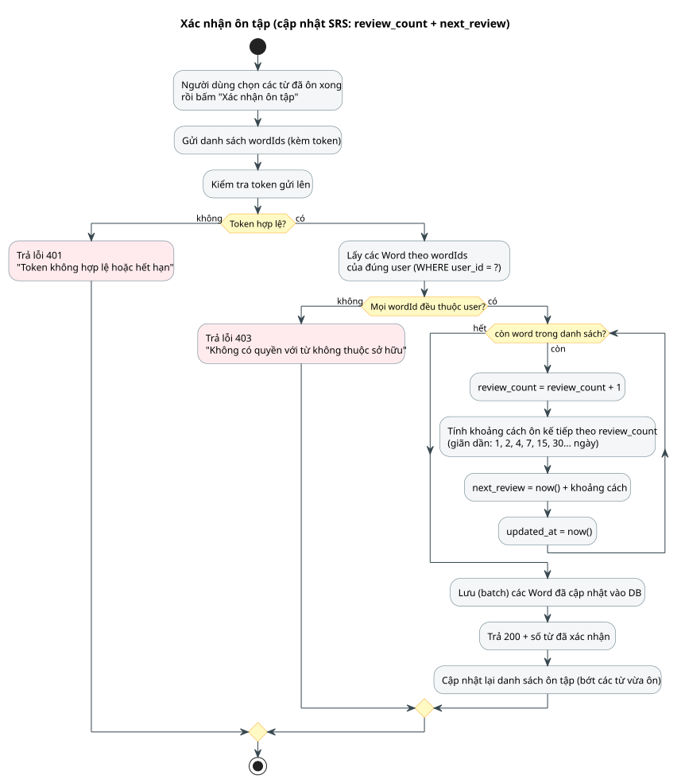
🎯 Cập Nhật Chu Kỳ Ôn Tập Ngắt Quãng SRS
Luồng máy chủ duy nhất ghi nhận kết quả học tập và dời lịch ôn tiếp theo theo đường cong quên lãng Ebbinghaus. Endpoint: POST /api/words/review.
🔄 Chi Tiết Luồng Hoạt Động
- Gửi danh sách từ đã ôn: Người dùng hoàn thành lượt ôn tập và gửi mảng
wordIdslên server. - Kiểm tra JWT & Sở hữu nghiêm ngặt: Thẩm định token (401 nếu lỗi). Kiểm tra toàn bộ
wordIdsphải thuộc vềcurrent_user.id; nếu có ID lạ → trả 403 Forbidden (chống IDOR). - Vòng lặp tính toán giãn cách (SRS Algorithm): Với từng từ:
review_count = review_count + 1- Khoảng cách ngày giãn dần: 1, 2, 4, 7, 14, 30... ngày tương ứng số lần đã ôn.
next_review = now() + khoảng_cáchupdated_at = now()
- Lưu Batch CSDL: Cập nhật toàn bộ các từ trong một transaction.
- Phản hồi: Trả mã 200 OK + số từ đã xác nhận; UI loại bỏ các từ vừa ôn xong khỏi danh sách đến hạn hôm nay.
Thêm Từ Theo Chủ Đề (AI Sinh 10 Từ Mới)
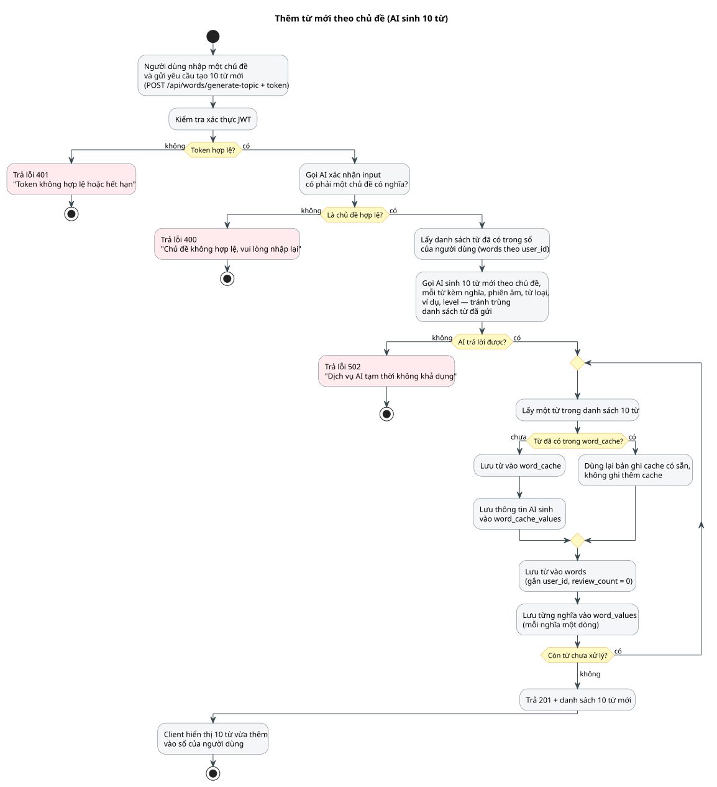
🎯 Sinh Hàng Loạt Từ Vựng — Lọc Trùng Tuyệt Đối
Người dùng nhập một chủ đề bất kỳ (vd: "phỏng vấn xin việc", "môi trường") → AI duyệt chủ đề, loại trừ toàn bộ từ đã có trong sổ và nạp 10 từ mới vào sổ trong 1 Transaction. Endpoint: POST /api/words/generate-topic.
🔄 Chi Tiết Luồng Hoạt Động (Quy Chuẩn 4 Bước)
- Thẩm định chủ đề (AI Step 1): AI kiểm tra input có phải một chủ đề có nghĩa không. Nếu là chuỗi ký tự ngẫu nhiên hoặc vô nghĩa → trả ngay 400 Bad Request ("Chủ đề không hợp lệ, vui lòng nhập lại").
- Xây dựng danh sách loại trừ (Exclusion List): Truy vấn toàn bộ cột
englishtrong bảngwordscủa user hiện tại → gửi kèm vào prompt cho AI để tuyệt đối không sinh trùng từ đã có. - AI sinh 10 từ chất lượng (Step 2): AI sinh 10 từ mới kèm đầy đủ: nghĩa tiếng Việt, phiên âm, từ loại, câu ví dụ và cấp độ CEFR. Nếu AI lỗi/timeout → trả 502, không ghi CSDL.
- Ghi CSDL an toàn (Batch Transaction):
- Nếu từ chưa có trong
word_cache→ ghi bổ sung vào cache dùng chung. - Luôn ghi vào
wordsvàword_valuesgắn với user. - Nếu xảy ra xung đột
UNIQUE (user_id, english)→ tự động Rollback toàn bộ 10 từ.
- Nếu từ chưa có trong
- Hoàn tất: Trả mã 200 OK cùng danh sách 10 từ mới; sổ từ vựng được cập nhật ngay lập tức.
Phần 3: Công Nghệ Sử Dụng
Flutter — Giao Diện Ứng Dụng Di Động
Xây dựng ứng dụng học thông minh đa nền tảng, mượt mà và tích hợp sâu dịch vụ hệ điều hành.
🎯 1. Mục Đích Sử Dụng
- • Single Codebase: 1 bộ mã nguồn dùng chung cho cả Android & iOS, rút ngắn 50% thời gian phát triển.
- • Hiệu năng 60/120fps: Dựng hình trực tiếp qua Skia/Impeller, loại bỏ hoàn toàn độ trễ JavaScript Bridge.
- • Trợ lý bỏ túi: Mang công cụ học từ vựng và chấm bài AI luôn đồng hành bên người học mọi lúc, mọi nơi.
⚙️ 2. Vai Trò Trong Hệ Thống
- • Giao diện tương tác: Cung cấp Flashcard lật thẻ 2 mặt (Anh – Việt, IPA, ví dụ) giúp ghi nhớ phản xạ.
- • Hiển thị chấm bài: Làm nổi bật trực quan các từ sai ngữ pháp kèm thẻ giải thích chi tiết tiếng Việt.
- • Xử lý phiên ngầm (JWT): Tự bắt lỗi 401 để kích hoạt Refresh Token ngầm không làm gián đoạn việc học.
⭐ 3. Tích Hợp Sâu Android OS Deep
Java Spring Boot — Máy Chủ Xử Lý Nghiệp Vụ
Trục điều phối trung tâm quản trị xác thực, giải thuật học tập và kết nối trí tuệ nhân tạo.
🎯 1. Mục Đích Sử Dụng
- • Bộ não xử lý trung tâm: Quản lý tập trung mọi logic nghiệp vụ, tính điểm AI và xác thực bảo mật tại máy chủ.
- • Chuẩn hóa RESTful JSON: Độc lập nền tảng, dễ dàng phục vụ nhiều loại client (Mobile, Web, Desktop).
- • Độ tin cậy doanh nghiệp: Kiến trúc phân tầng rõ ràng, dễ bảo trì, dễ viết kiểm thử tự động (Unit Test).
⚙️ 2. Vai Trò Trong Hệ Thống
- • Xác thực & Phân quyền: Xử lý đăng ký, đăng nhập, mã hóa mật khẩu và cấp phát JWT token an toàn.
- • Điều phối giải thuật SRS: Tự động tính toán ngày ôn tập giãn cách tiếp theo cho từng từ vựng.
- • Tích hợp AI: Điều phối prompt sinh 10 từ theo chủ đề và chấm bài viết ngữ pháp chuẩn xác.
⭐ 3. Điểm Nhấn Kỹ Thuật Backend Core
MySQL — Cơ Sở Dữ Liệu Quan Hệ
Nền móng lưu trữ dữ liệu bền vững với 8 bảng quan hệ chuẩn hóa 1NF, toàn vẹn tham chiếu và bộ đệm toàn cục.
🎯 1. Mục Đích Sử Dụng
- • Lưu trữ bền vững: Engine InnoDB tuân thủ ACID, bảo vệ dữ liệu học tập an toàn trước mọi sự cố sập nguồn.
- • Tổ chức chuẩn mực: 8 bảng dữ liệu quan hệ được chuẩn hóa 1NF, phân định 4 phân hệ chức năng rõ ràng.
- • Truy vấn tốc độ cao: Tối ưu chỉ mục (Index) và quan hệ khóa ngoại phục vụ truy xuất nhanh cho Spring Boot.
⚙️ 2. Vai Trò Trong Hệ Thống
- • Quản lý 4 phân hệ: Lưu trữ người dùng (Tài khoản), từ vựng (Sổ từ), bài viết (Luyện viết) và kho đệm (Cache).
- • Bảo toàn quan hệ 1-N: Quản lý chặt chẽ liên kết giữa từ vựng với danh sách nghĩa, ví dụ minh họa và lỗi câu.
-
•
Kho đệm dùng chung: Bảng
word_cachelưu các từ AI đã sinh nghĩa để mọi người dùng cùng tái sử dụng.
⭐ 3. Điểm Nhấn Kỹ Thuật Data Core
Tổng Kết Kiến Trúc & Tiêu Chuẩn Kỹ Thuật
Các nguyên lý cốt lõi bảo đảm tính tin cậy, bảo mật và hiệu năng cao cho hệ thống LEnglish.
- • BCrypt Password Hashing: Mật khẩu băm với salt tự động, độ dài 60 ký tự, chống rò rỉ cơ sở dữ liệu.
- • Refresh Token Rotation: Dùng một lần rồi hủy, sinh cặp token mới; dọn dẹp định kỳ bởi server scheduler.
- • Chống IDOR Toàn Diện: Mọi thao tác Sửa/Xóa từ, Xóa đoạn văn, Xác nhận ôn tập đều kiểm tra quyền sở hữu (
user_id), chặn tấn công thay đổi ID tài nguyên (403).
- • Chuẩn Hóa 1NF: Tách triệt để thuộc tính đa trị của từ (nghĩa, ví dụ, phiên âm, từ loại) sang bảng con, loại bỏ ghép chuỗi phi cấu trúc.
- • ACID Transactions: Thao tác lưu từ, sửa từ, sinh 10 từ theo chủ đề thực thi trong transaction nguyên tử; vi phạm Unique sẽ tự động rollback an toàn.
- • ON DELETE CASCADE: Triệt tiêu nguy cơ mồ côi dữ liệu khi người dùng xóa từ vựng hoặc đoạn văn.
- • Cache-First Strategy: Kho từ vựng chung (
word_cache) giúp đáp ứng ngay kết quả sinh nghĩa cho các từ phổ biến, tiết kiệm tối đa quota AI. - • On-Device Machine Learning: Nhận diện chữ OCR bằng Google ML Kit chạy trực tiếp trên chip điện thoại, không cần tải ảnh lên cloud, đảm bảo quyền riêng tư.
- • Thuật toán SRS Spaced Repetition: Tối ưu chu kỳ ghi nhớ từ vựng khoa học dựa trên lịch sử số lần ôn tập cá nhân hóa.
Hệ Thống LEnglish — Hoàn Toàn Đồng Bộ 1:1 Giữa Thiết Kế & Hiện Thực
20 Use Cases • 20 Activity Diagrams • 20 Sequence Diagrams • 8 Tables ERD